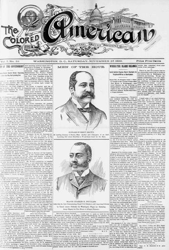

|
When black Americans formed community organizations in the opening years of
the early republic, they almost always chose the term "African" as a
self-descriptor. Some prominent examples of this include the African Methodist
Episcopal Church (1794), the African Free School (1787), and the African Society
for Mutual Relief (1810). By the decades prior to the Civil War, however, black
Americans had largely abandoned this appellation in favor of the term "colored".
Such was the case, for example, with the journal Colored American (1837),
and the National Emigration Convention of Colored People (1854).
|

The Colored American was part of a conscious
shift on the part of African-American leaders to shape national
discourse.
|
Why the change? In the opening years of the new United States, the free black
community leaders struggled to carve out a place in the public sphere. In order
to lay a claim to citizenship and respectability in the new nation, one had to
have independence, and the capacity for self-government. The default assumption
of white men was that women, children, servants, and slaves all lacked this
capacity. In order to avoid falling into these categories, free blacks had to
create an identity that was distinct from that of "slave"--which so many whites
usually turned to whenever they thought of black people. By identifying
themselves as "African," free blacks created a positive identity for themselves
in much the same ways as recent European immigrants did when they banded
together to form the Hibernian Relief Society or the Boston Scottish Society. In
this context, "African" entailed a respectable ethnic identity.
All of this changed, however, with the formation of the American Colonization
Society (1816), a prominent and popular white organization that sought to remove
all free blacks from the United States, "returning" them to their "homeland" of
Africa. Although most free blacks were born and raised in North America, many
whites perceived them to be outsiders or foreigners, and the self-descriptor
"African" only reinforced this image. Black leaders agreed, then, that a new
term was necessary.
In this context, the term "colored" had a number of advantages. Unlike
"African", the word "colored" in those days did not have a history of negative
connotations when presented to a white audience. Furthermore, it tended to be
used to speak of lighter skinned--and often socially elite--people of African
descent, and so had a relatively favorable connotation. By 1830, "colored"
became the dominant term invoked by free blacks to refer to themselves and the
institutions that they formed. In the three decades prior to the Civil War,
"colored" was employed as a means of referring to all people of African descent,
be they slave or free, and so also served to develop solidarity in the face of
an increasingly hostile white population.
Source: Christopher Bates, ed. The Encyclopedia of the Early
Republic and Antebellum America (Armonk, NY: M.E. Sharpe, 2010), 385.
|